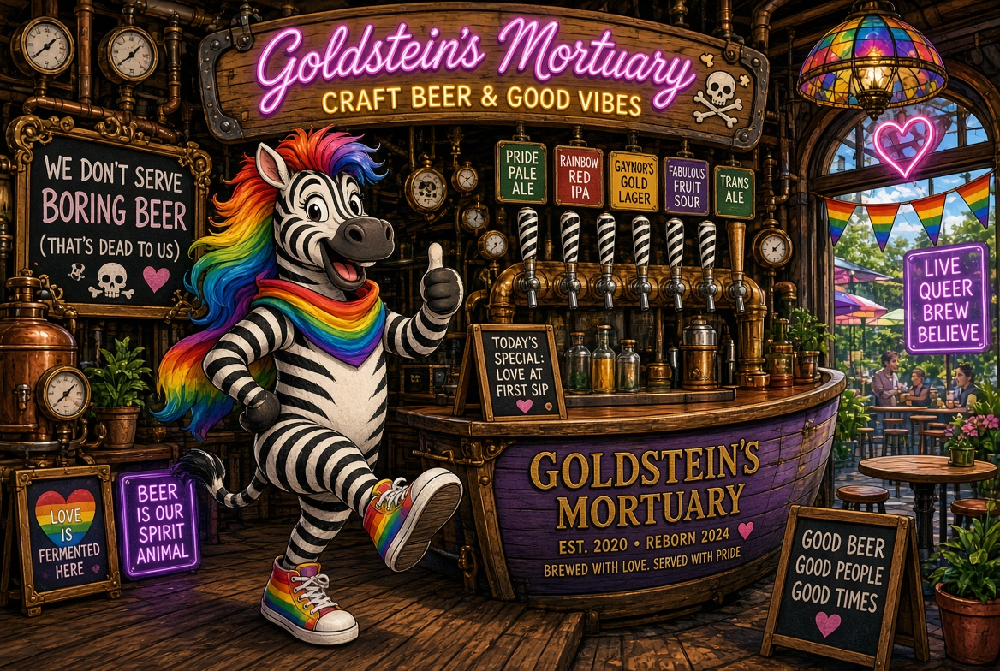

Goldstein’s Mortuary & Delicatessen
Yipes walked in, looked at the steampunk boat-hull bar and the 45+ taps, and whispered, “No bodies, no pastrami… just stripes.” He painted subtle zebra lines along the edge of the bar so that every time someone ordered a flight they would have to step across a white stripe and consider a water. The patio got a full rainbow-zebra treatment. He told the staff the new house special should be called “Embalming Fluid… but Make It Alternate.” They laughed. He winked. It was gay as hell and perfect.